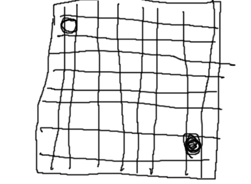
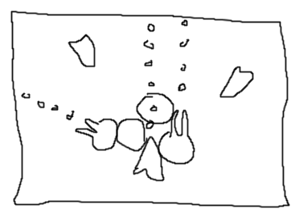
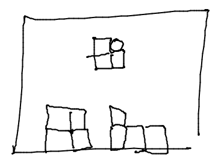
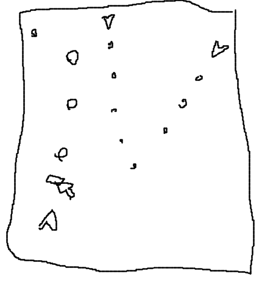

Link to Boid Game, a test for a mobile game. Swipe to move your player, click on objects to sic your swarm on them. Move over nectar to pick it up, click on hives to exchange them for bees.
Some games that may or may not be finished
Link to Grapplevania, a demo for a game I'd like to make, a metroidvania game with a big emphasis on using a grappling hook to descend into a strange underground world. Aim with your mouse, shoot by holding your left mouse button, use your grappling hook by holding your right mouse button. A/D to move, W/S to extend/retract your grappling hook's rope, space to jump.

Link to Capture, Click on an empty space to place a new piece, click a piece to move it. The dark grey squares are castles, and the 8 surrounding tiles are their lands. Click to add a piece to a land as long as you own that castle. You can move your pieces in 8 directions, and jump over enemy pieces. You can make multiple jumps with the same piece over the same turn. Game over when you're done playing, when here's no more meaningful moves available, or when one side has no pieces left. I don't have an actual gameover state programmed in, unfortunately.

Link to Shooter game 2, WASD to move, click to shoot. Rotate your ship to aim, shoot down enemies and collect their parts to gain guns and shields

Link to Block game, Click to drop blocks, right click to rotate.
